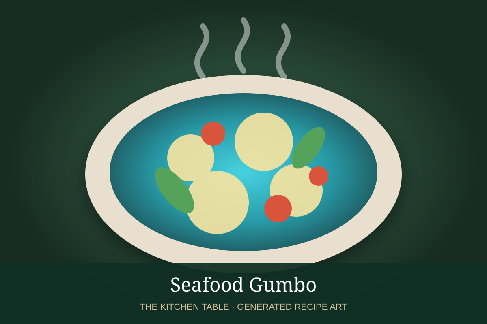

← Back to all recipes
SEAFOOD · CAJUN / CREOLE
Seafood Gumbo
A dark-roux Louisiana gumbo loaded with shrimp, crab, and oysters, with the holy trinity and plenty of Creole seasoning.
1 hr 45 minServes 8

Photo: Wikimedia Commons
Ingredients
- 1/2 cup neutral oil
- 1/2 cup all-purpose flour
- 1 large onion, diced
- 1 green bell pepper, diced
- 3 celery ribs, diced
- 4 garlic cloves, minced
- 6 cups seafood stock
- 1 tsp dried thyme
- 2 bay leaves
- 1 tbsp Creole seasoning, plus more to taste
- 1/2 tsp cayenne, optional
- 1 lb large shrimp, peeled and deveined
- 1 lb lump or claw crabmeat
- 1 pint shucked oysters with liquor, optional
- 2 cups sliced okra, optional
- Salt and black pepper
- Cooked white rice, scallions, and parsley, for serving
Preparation
- Make the roux: heat oil in a heavy pot over medium heat. Whisk in flour and cook, stirring constantly, until the roux reaches a deep chocolate-brown color.
- Add onion, bell pepper, and celery carefully; cook until softened. Stir in garlic for 30 seconds.
- Gradually whisk in seafood stock. Add thyme, bay leaves, Creole seasoning, cayenne, and okra if using.
- Simmer gently for about 45 minutes, stirring occasionally.
- Add shrimp and cook until nearly opaque, then fold in crabmeat and oysters with their liquor. Simmer only until the seafood is just cooked.
- Taste for salt and pepper. Serve over white rice with scallions and parsley.